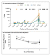

Original Article
A Functional Genetic Link between Distinct Developmental Language Disorders
N Engl J Med 2008; 359:2337-2345November 27, 2008
- Abstract
Background
Rare mutations affecting the FOXP2 transcription factor cause a monogenic speech and language disorder. We hypothesized that neural pathways downstream of FOXP2 influence more common phenotypes, such as specific language impairment.
Methods
We performed genomic screening for regions bound by FOXP2 using chromatin immunoprecipitation, which led us to focus on one particular gene that was a strong candidate for involvement in language impairments. We then tested for associations between single-nucleotide polymorphisms (SNPs) in this gene and language deficits in a well-characterized set of 184 families affected with specific language impairment.
Results
We found that FOXP2 binds to and dramatically down-regulates CNTNAP2, a gene that encodes a neurexin and is expressed in the developing human cortex. On analyzing CNTNAP2 polymorphisms in children with typical specific language impairment, we detected significant quantitative associations with nonsense-word repetition, a heritable behavioral marker of this disorder (peak association, P=5.0×10−5 at SNP rs17236239). Intriguingly, this region coincides with one associated with language delays in children with autism.
Conclusions
The FOXP2–CNTNAP2 pathway provides a mechanistic link between clinically distinct syndromes involving disrupted language.
Media in This Article
Article Activity
- Article
Developmental disorders of speech, language, and communication account for 40% of referrals to pediatric services.1 Although many children grow out of early language delay, others have persistent difficulties with language expression and comprehension, despite normal nonverbal ability and lack of an obvious reason. In some children, developmental speech or language impairments are part of a broader syndrome such as autism, in which these deficits are accompanied by unusual repetitive behaviors and disturbances in social interaction. More commonly, such impairments occur in the absence of autistic features.2 Longitudinal studies have indicated that when language impairments persist to school age, they are likely to be associated with enduring academic and psychiatric problems.3
Developmental speech and language disorders are highly heritable, with most cases showing complex multifactorial inheritance.4 The isolation of relevant genetic effects will yield new insights into the causes of such impairments, along with improved classification, diagnosis, and treatment. One notable success in this area was the discovery that heterozygous disruptions of the FOXP2 gene cause a rare mendelian speech and language disorder.5-9 Point mutations and chromosomal abnormalities that affect FOXP2 are associated with difficulties in the learning and production of sequences of oral movements, which impair speech (also called developmental verbal dyspraxia or childhood apraxia of speech).5-9 The affected persons also have variable levels of impairment in expressive and receptive language, extending to problems with production and comprehension of grammar.10 However, FOXP2 disruptions are rare. It has been estimated that approximately 2% of people with verbal dyspraxia carry etiologic point mutations in this gene.6
Specific language impairment is the most frequently diagnosed form of developmental language disorder, affecting up to 7% of children who are 5 or 6 years of age.11 Although there is considerable variation in the profile of linguistic deficits observed and in the functions affected (expressive, receptive, or both),12 specific language impairment often occurs without accompanying difficulties in speech articulation. For example, an epidemiologic study showed that only about 5 to 8% of children with persistent specific language impairment had a significant speech delay.13 Moreover, analyses of FOXP2 in persons with typical forms of specific language impairment have not detected etiologic mutations or evidence of association.14,15 Mutation of FOXP2 itself is therefore unlikely to be a major risk factor for common language impairments. Indeed, to date we know of no report of a gene associated with typical specific language impairment.12
Because FOXP2 encodes a neurally expressed transcription factor,16,17 we reasoned that one or more of the genes that it regulates in the brain might be implicated in common language-related phenotypes. Here we describe the isolation of a novel FOXP2-regulated target with neural functions and provide evidence of its association with language-related deficits in a large set of well-characterized families with specific language impairment.
Methods
Screening for Targets of FOXP2
We engineered the human neuroblastoma SH-SY5Y cell line to stably express FOXP218 and then, using this transfected cell line, carried out unbiased screening for genomic sites bound by FOXP2 protein. This involved the use of chromatin immunoprecipitation with anti-FOXP2 antibodies, followed by shotgun sequencing of purified DNA, a process of randomly cloning fragments of DNA and then determining their sequence (for details, see the Supplementary Appendix, available with the full text of this article at www.nejm.org). We determined the positions of DNA sequences that were isolated with chromatin immunoprecipitation, using BLAT on the University of California, Santa Cruz, Genome Server (http://genome.ucsc.edu/), which enabled identification of putative target genes.
Validation of Binding and Regulation by FOXP2
Binding of FOXP2 to target sites was independently verified and further localized with the use of semiquantitative polymerase-chain-reaction (PCR) assay of chromatin isolated from additional chromatin-immunoprecipitation experiments and electrophoretic mobility shift assays (EMSAs), according to protocols reported previously.18 Regulation of putative target genes was assessed with the use of quantitative reverse-transcriptase PCR (RT-PCR) of RNA extracted from SH-SY5Y cells expressing different FOXP2 levels, as described previously18 (see Table S1 in the Supplementary Appendix for primer sequences). In situ hybridization was performed on human fetal brains,19 as described in the Methods section in the Supplementary Appendix.
Study Subjects
The study subjects were members of epidemiologically and clinically ascertained families identified by the Specific Language Impairment Consortium.20,21 These families were recruited from four sites in the United Kingdom: the Newcomen Centre at Guy's Hospital,20,21 the Cambridge Language and Speech Project,22 the Child Life and Health Department at Edinburgh University,23 and the Manchester Language Study.24 Families were selected through a proband with specific language impairment whose past or current language skills were 1.5 SD or more below the normative mean for the child's age on the Clinical Evaluation of Language Fundamentals–Revised (CELF-R) scale,25 a tool that is routinely used for diagnosis and follow-up evaluation of language disorders in school-age children. (Scores on the scale range from 50 to 150, with a mean of 100 and a standard deviation of 15 in the general population. Lower scores indicate poorer performance.) We excluded any children with a nonverbal IQ of less than 80, a clinical diagnosis of an autistic-spectrum disorder, or another known medical or developmental condition that can impair language, such as hearing loss, cleft lip, or cleft palate. Moreover, for clinically ascertained samples, children were comprehensively assessed on scales evaluating language, IQ, and behavior, and those with overt pragmatic difficulties, behavioral characteristics associated with autism, or a family history indicative of autism were also excluded.
We collected quantitative phenotypic data from probands and all available siblings. We then determined composite CELF-R scores for expressive and receptive language abilities. We also used a measure of the ability to repeat nonsense words, the Children's Test of Nonword Repetition,26 which has been established as a robust endophenotype of specific language impairment.12 (Scores on the scale range from 46 to 141, with a mean of 100 and a standard deviation of 15 in the general population. Lower scores indicate poorer performance.) This measure is thought to provide an index of phonologic short-term memory.12 Children with specific language impairment perform particularly poorly on nonsense-word repetition, and impaired phonological short-term-memory has been proposed as a core deficit in the disorder. An impairment in the ability to repeat nonsense words is highly heritable, persists in persons with historical language problems that have otherwise resolved,27 and appears to be relatively unaffected by environmental factors.28 Additional information on the consortium families has been reported previously20,21 and is available in Table S2 in the Supplementary Appendix, which shows means, standard deviations, and intertrait correlations for language measures used in this study. Written informed consent was obtained from all subjects or their parents; assent was obtained from children of appropriate age.
Single-Nucleotide-Polymorphism Genotyping
To directly test the hypothesis that variants of the identified FOXP2 target (the CNTNAP2 gene) may increase susceptibility to common language impairments, we genotyped single-nucleotide polymorphisms (SNPs) in consortium families, followed by quantitative association analyses of measures of expressive and receptive language abilities and nonsense-word repetition. We genotyped and validated 38 SNPs from the CNTNAP2 locus on chromosome 7q35 in samples from 847 members of 184 consortium families, using Golden Gate assays on the Illumina platform (for details, see the Methods section and Table S3 in the Supplementary Appendix).
Statistical Analysis
For analyses of differences in gene expression in SH-SY5Y cells, we assessed statistical significance using unpaired t-tests (two-tailed). For family-based association analyses of SNP data from the consortium series, we used a quantitative transmission disequilibrium test (QTDT), adopting an orthogonal association model that considers only the within-family variance and is robust to population stratification.29 After identifying significant single SNP associations, we used the Merlin package30 to generate haplotypes for the cluster of nine associated SNPs, which were similarly analyzed with QTDT. Finally, we investigated the possibility of an effect of sex or imprinting within QTDT, using these nine SNP-tag haplotypes.
Results
CNTNAP2 as a Target of FOXP2
To identify candidate genes that might be involved in typical specific language impairment, we used an unbiased screening method to isolate genomic fragments bound by the FOXP2 protein in chromatin of human neuronlike cells. We thereby discovered a FOXP2-bound fragment that was of particular interest, because it was located within intron 1 of CNTNAP2 (Figure 1AFigure 1Identification of CNTNAP2 as a Direct Neural Target Bound by Human FOXP2.). This gene encodes CASPR2, a member of the neurexin superfamily of transmembrane proteins, found at the nodes of Ranvier in myelinated nerve fibers. In mice, Caspr2 is important for the regulation of the localization and maintenance of Shaker-type voltage-activated potassium channels31 and is implicated in neuronal recognition and cell adhesion.32 In humans, it has been suggested that CASPR2 is involved in cortical development, possibly mediating intercellular interactions during neuroblast migration and laminar organization.33
We used PCR to amplify sequences spanning the FOXP2-bound fragment of CNTNAP2 in independent FOXP2 chromatin-immunoprecipitation samples and in control samples in which no antibodies were used and observed evidence of enrichment only when FOXP2-specific antibodies had been used to isolate the chromatin (Figure 1A). Primers amplifying regions of 1000 bp or more away from the bound fragment did not display FOXP2–chromatin immunoprecipitation enrichment. FOXP2 is thought to bind chromatin as a dimer, and our in silico analyses of the chromatin immunoprecipitation–enriched fragment identified two adjacent sites, separated by 48 bases, matching a known consensus sequence for FOXP2 binding (CAAATT). EMSA analyses indicated that FOXP2 could bind both sites (data not shown). At each site, binding could be disrupted by the mutation of three core nucleotides of the recognition sequences (CAAATT→CGGGTT), with more dramatic effects observed for the 5′ site. Full competition assays for this site showed highly efficient and specific binding by FOXP2 (Figure 1B).
We then used quantitative RT-PCR to directly test whether modulation of FOXP2 protein levels would yield altered CNTNAP2 expression. Indeed, CNTNAP2 messenger RNA levels were consistently and significantly reduced in neuronlike cells that were stably transfected with FOXP2, as compared with sham-transfected control samples (Figure 2AFigure 2Analyses of the Effects of FOXP2 on Neural Expression of CNTNAP2.).
A recent genomewide analysis of differential gene expression in the developing human cerebral cortex independently highlighted CNTNAP2 as a gene with substantial enrichment in frontal gray matter, which is primarily restricted to the region between the orbital gyrus and superior frontal anlage, spanning the inferior and middle frontal gyri.34 Because FOXP2 is also expressed in the developing human cortex,16,34,35 we carried out expression analyses of this structure in fetal tissue (18 to 22 weeks' gestation) through in situ hybridization. We observed complementary patterns with respect to cortical lamination: CNTNAP2 expression was lowest in layers that showed the highest levels of FOXP2 (Figure 2B). These in vivo findings are consistent with our data from neuronal models, supporting negative regulation of human CNTNAP2 expression by FOXP2.
Association Analyses of CNTNAP2
Several studies underscored CNTNAP2 as a particularly compelling candidate gene to test for association with specific language impairment. In addition to our identification of it as a direct neural target of FOXP2, it has known neuronal functions,31,32 and its expression is enriched in human language-related circuitry.34 Furthermore, the gene is disrupted in a family with Tourette's syndrome,36 and a rare point mutation causes a severe recessive disorder involving cortical dysplasia and focal epilepsy, associated with language regression and autistic characteristics.33 Recent independent studies have implicated variants at the CNTNAP2 locus in autistic-spectrum disorders,37-39 with one study showing association with a measure of language delay (the age at the first spoken word) in multiplex autism families.37
We therefore went on to assess CNTNAP2 involvement in specific language impairment by genotyping polymorphisms across the locus in the large series of consortium families and testing for marker-trait association, using a family-based association method. Using an approach that was consistent with previous studies of this series,21,22 we analyzed quantitative phenotypes from probands and all available siblings, regardless of the diagnosis of specific language impairment, and focused on composite diagnostic measures of expressive and receptive language abilities, as well as a test of nonsense-word repetition, which was previously established as a robust endophenotype.12
We observed significant associations (with P values from 0.01 to 5.0×10−5) between nonsense-word repetition and nine intronic SNPs (rs851715, rs10246256, rs2710102, rs759178, rs1922892, rs2538991, rs17236239, rs2538976, and rs2710117), all mapping between exons 13 and 15. The most strongly associated SNP was rs17236239 (P=5.0×10−5) (Figure 3AFigure 3Association between CNTNAP2 and Language Deficits in Families with Specific Language Impairment., and Table S3 in the Supplementary Appendix). Even after an overly conservative Bonferroni correction for testing of multiple SNPs was made, this P value remained significant (P=0.002). The rs17236239 SNP was also the marker showing strongest evidence of association with expressive language abilities (P=0.008). The exon 13–15 region was similarly implicated in analyses of receptive language abilities, but in this case the strongest association was observed for a different SNP, rs4431523 (P=0.003).
We constructed multimarker haplotypes with the 9 SNPs implicated in the ability to repeat nonsense words and observed 11 different combinations. Four haplotypes represented 94% of subjects (Table S4 in the Supplementary Appendix). The most common haplotype, ht1, negatively influenced the ability to repeat nonsense words; it was more often present in family members with poor scores (a frequency of 40% among those with scores of >2 SD below the population mean) than in those with good scores (a frequency of 29% among those with scores of >0.5 SD above the population mean). We classified probands and siblings according to the number of copies (none, one, or two) of this putative risk haplotype they had and calculated the mean score for nonsense-word repetition for each group (Figure 3B). There was a decrease of approximately 6 points (0.4 SD) between the mean scores for nonsense-word repetition of children carrying no copies of ht1 (mean, 95.2) and those carrying two copies (mean, 89.4). We observed a difference of similar magnitude in scores between children carrying no copies of ht1 and those carrying one copy of ht1 (mean, 89.7), a finding that suggests a dominant effect. Although only 49 children carried two copies of ht1, as compared with 176 with no copy and 174 with one copy, we observed very similar results in an augmented data set incorporating all available parental scores (Figure 3B). Moreover, family-based quantitative association analyses of the nine-marker haplotypes and scores on nonsense-word repetition yielded a P value of 6.0×10−4 for ht1, again indicating that this haplotype is significantly associated with impaired language performance (Table S4 in the Supplementary Appendix).
Investigations of CNTNAP2 in patients with autism showed an increased association in families with affected males37 and also suggested the possibility of imprinting.38 We therefore repeated our QTDT analysis of the haplotype associated with impaired nonsense-word repetition in the families with specific language impairment, using sex as a covariate and testing for differences in transmission of paternal and maternal alleles. We found no evidence of a role of sex (P=6.0×10−4 with no adjustment for sex, P=8.0×10−4 with adjustment for sex) or of imprinting (P=0.27) at this locus.
Discussion
We have shown that FOXP2, which is mutant in people with a rare speech and language disorder, directly regulates expression of the CNTNAP2 gene. We went on to demonstrate that variants of CNTNAP2 are associated with deficits in common forms of language impairment. In so doing, we provide an example of how knowledge of the genetic cause of a rare single-gene disorder provides an entry point into the causes of a more complex phenotype. Further analyses of the relevant regulatory networks — including the FOXP2–CNTNAP2 pathway identified here — may lead to a better understanding of neurogenetic mechanisms involved in typical language disorders.
The FOXP2-bound fragment of CNTNAP2 lies outside the classically defined regulatory regions of the genome represented on available promoter-based microarrays. It therefore escaped detection in recently published efforts in which chromatin immunoprecipitation with FOXP2 antibodies was coupled to screening of such microarrays.18,40 Indeed, large-scale surveys of transcription-factor binding have indicated that functional regulatory sequences often lie far from known promoters, with many of such sequences mapping within introns.41
Thus far, CNTNAP2 is the only FOXP2 target that we have tested for association in specific language impairment. Of all FOXP2 targets identified to date,18,40 we prioritized CNTNAP2 for association testing in common language disorders because it represented the most compelling of candidates, with converging support from multiple lines of independent investigation. That these first association analyses were positive illustrates the promise of our function-based approach. In future work, we will go on to assess other neural targets of FOXP2 in a similar manner.
There is considerable debate over the existence of shared causes of neurodevelopmental syndromes that are treated as diagnostically distinct, such as autism and specific language impairment.2,42,43 In this study, we observed an association between the endophenotype of nonsense-word repetition and polymorphisms in the exon 13–15 region of CNTNAP2 in children with specific language impairment. A study of the gene in children with autism37 showed an association between polymorphisms in the exon 13–15 region (similarly centered on tagging-SNP rs2710102) and the age at the first spoken word. The same SNP alleles were associated with susceptibility in both studies (Table S3 in the Supplementary Appendix). Therefore, similar CNTNAP2 variants may represent susceptibility factors for language-related deficits in both specific language impairment and autism.
The CNTNAP2 associations we describe here for specific language impairment are not simply a replication of those reported previously for patients with autistic-spectrum disorders. We made a rigorous effort to exclude persons with autistic-spectrum disorders from our analysis. Although diagnostic boundaries are not always clear, it is unlikely that persons who received a misdiagnosis of autistic-spectrum disorder remained in such numbers that they accounted for the strength of the association that we observed. Moreover, we used a quantitatively defined endophenotype previously proposed to underlie typical specific language impairment, rather than a categorical designation of affected status.
Instead, our findings are compatible with the idea that different components of autistic-spectrum disorders (communication deficits, impaired social interaction, and rigid or repetitive behaviors) may be under different genetic influences.44 In this view, language impairments are observed in relatively pure form in specific language impairment, but when they occur in association with other social and behavioral deficits, such impairments can result in a diagnosis of autism.45 Thus, altered CNTNAP2 function or regulation could represent a shared mechanism contributing to language-related endophenotypes in both specific language impairment and autism. These findings illustrate the value of using endophenotypes for the genetic dissection of such disorders.
In conclusion, by integrating functional genomics and quantitative trait analyses, we have identified a shared neurogenetic pathway that is disturbed in distinct forms of language impairment. This work represents a move away from isolated studies of individual genes and toward an understanding of molecular networks that may go awry in neurodevelopmental disorders affecting language.
Supported by project and program grants from the Wellcome Trust (to Drs. Fisher and Monaco, respectively), a pilot grant from Autism Speaks (to Dr. Fisher), awards (MH75028-R21, MH081754-RO1, MH60233-R37, and HD055784-P50) from the National Institute of Mental Health (to Dr. Geschwind), a Christopher Welch Biological Sciences Scholarship from the University of Oxford (to Dr. Vernes), a postdoctoral fellowship from the Tourette Syndrome Association (to Dr. Abrahams), and a Marie Curie Intra-European Fellowship (to Dr. Nicod). Dr. Monaco is a Wellcome Trust Principal Research Fellow, and Dr. Fisher is a Royal Society Research Fellow. Drs. Newbury, Monaco, and Fisher and Ms. Winchester are members of the Specific Language Impairment Consortium.
No potential conflict of interest relevant to this article was reported.
This article (10.1056/NEJMoa0802828) was published at www.nejm.org on November 5, 2008.
We thank all the families who participated in this study through the Specific Language Impairment Consortium and other consortium members for their contributions to this work: L. Addis, Wellcome Trust Centre for Human Genetics, University of Oxford; I.M. Goodyer, Cambridge Language and Speech Project; E. Simonoff and P.F. Bolton, Child and Adolescent Psychiatry Department and Medical Research Council Centre for Social, Developmental and Genetic Psychiatry, Institute of Psychiatry; V. Slonims and G. Baird, Newcomen Centre, Guy's Hospital; A. Everitt, E. Hennessy, M. Main, D. Shaw, and P.J. Helms, Department of Child Health, University of Aberdeen; A.D. Kindley, Raeden Centre and Grampian University Hospitals Trust; A. Clark and J. Watson, Speech and Hearing Sciences, Queen Margaret University; A. O'Hare, Department of Reproductive and Developmental Sciences, University of Edinburgh; J. Seckl, Molecular Medicine Centre, University of Edinburgh; H. Cowie, Department of Speech and Language Therapy, Royal Hospital for Sick Children, Edinburgh; W. Cohen, Department of Educational and Professional Studies, University of Strathclyde; J. Nasir, Clinical Developmental Sciences, St. George's University of London; D.V.M. Bishop, Department of Experimental Psychology, University of Oxford; Z. Simkin and G. Conti-Ramsden, Human Communication and Deafness, School of Psychological Sciences, University of Manchester; and M. Falcaro and A. Pickles, Biostatistics Group, School of Epidemiology and Health Science, University of Manchester; as well as D.V.M. Bishop, G. Baird, G. Conti-Ramsden, and A. O'Hare for their assistance with the preparation of the manuscript.
Source Information
From the Wellcome Trust Centre for Human Genetics (S.C.V., D.F.N., L.W., J.N., M.G., A.P.M., S.E.F.) and the Medical Research Council Functional Genomics Unit (S.C.V., P.L.O., K.E.D.), University of Oxford, Oxford, United Kingdom; and the Department of Neurology (B.S.A., M.A., D.H.G.) and the Semel Institute and the Department of Human Genetics (D.H.G.), David Geffen School of Medicine, University of California, Los Angeles, Los Angeles.
Address reprint requests to Dr. Fisher at the Wellcome Trust Centre for Human Genetics, University of Oxford, Roosevelt Dr., Headington, Oxford OX3 7BN, United Kingdom, or at simon.fisher@well.ox.ac.uk.
- References
References
1
Harel S ,Greenstein Y ,Kramer U , et al. Clinical characteristics of children referred to a child development center for evaluation of speech, language, and communication disorders. Pediatr Neurol 1996;15:305-311
CrossRef | Web of Science | Medline2
Conti-Ramsden G ,Simkin Z ,Botting N . The prevalence of autistic spectrum disorders in adolescents with a history of specific language impairment (SLI). J Child Psychol Psychiatry 2006;47:621-628
CrossRef | Web of Science | Medline3
Cohen NJ. Language impairment and psychopathology in infants, children, and adolescents. Thousand Oaks, CA: Sage, 2001.
4
Fisher SE ,Lai CS ,Monaco AP . Deciphering the genetic basis of speech and language disorders. Annu Rev Neurosci 2003;26:57-80
CrossRef | Web of Science | Medline5
Lai CS ,Fisher SE ,Hurst JA ,Vargha-Khadem F ,Monaco AP . A forkhead-domain gene is mutated in a severe speech and language disorder. Nature 2001;413:519-523
CrossRef | Web of Science | Medline6
MacDermot KD ,Bonora E ,Sykes N , et al. Identification of FOXP2 truncation as a novel cause of developmental speech and language deficits. Am J Hum Genet 2005;76:1074-1080
CrossRef | Web of Science | Medline7
Feuk L ,Kalervo A ,Lipsanen-Nyman M , et al. Absence of a paternally inherited FOXP2 gene in developmental verbal dyspraxia. Am J Hum Genet 2006;79:965-972
CrossRef | Web of Science | Medline8
Shriberg LD ,Ballard KJ ,Tomblin JB ,Duffy JR ,Odell KH ,Williams CA . Speech, prosody, and voice characteristics of a mother and daughter with a 7;13 translocation affecting FOXP2. J Speech Lang Hear Res 2006;49:500-525
CrossRef | Web of Science | Medline9
Zeesman S ,Nowaczyk MJ ,Teshima I , et al. Speech and language impairment and oromotor dyspraxia due to deletion of 7q31 that involves FOXP2. Am J Med Genet A 2006;140:509-514
Web of Science | Medline10
Watkins KE ,Dronkers NF ,Vargha-Khadem F . Behavioural analysis of an inherited speech and language disorder: comparison with acquired aphasia. Brain 2002;125:452-464
CrossRef | Web of Science | Medline11
Tomblin JB ,Records NL ,Buckwalter P ,Zhang X ,Smith E ,O'Brien M . Prevalence of specific language impairment in kindergarten children. J Speech Lang Hear Res 1997;40:1245-1260
Web of Science | Medline12
Newbury DF ,Bishop DV ,Monaco AP . Genetic influences on language impairment and phonological short-term memory. Trends Cogn Sci 2005;9:528-534
CrossRef | Web of Science | Medline13
Shriberg LD ,Tomblin JB ,McSweeny JL . Prevalence of speech delay in 6-year-old children and comorbidity with language impairment. J Speech Lang Hear Res 1999;42:1461-1481
Web of Science | Medline14
Newbury DF ,Bonora E ,Lamb JA , et al. FOXP2 is not a major susceptibility gene for autism or specific language impairment. Am J Hum Genet 2002;70:1318-1327
CrossRef | Web of Science | Medline15
O'Brien EK ,Zhang X ,Nishimura C ,Tomblin JB ,Murray JC . Association of specific language impairment (SLI) to the region of 7q31. Am J Hum Genet 2003;72:1536-1543
CrossRef | Web of Science | Medline16
Lai CS ,Gerrelli D ,Monaco AP ,Fisher SE ,Copp AJ . FOXP2 expression during brain development coincides with adult sites of pathology in a severe speech and language disorder. Brain 2003;126:2455-2462
CrossRef | Web of Science | Medline17
Vernes SC ,Nicod J ,Elahi FM , et al. Functional genetic analysis of mutations implicated in a human speech and language disorder. Hum Mol Genet 2006;15:3154-3167
CrossRef | Web of Science | Medline18
Vernes SC ,Spiteri E ,Nicod J , et al. High-throughput analysis of promoter occupancy reveals direct neural targets of FOXP2, a gene mutated in speech and language disorders. Am J Hum Genet 2007;81:1232-1250
CrossRef | Web of Science | Medline19
Abu-Khalil A ,Fu L ,Grove EA ,Zecevic N ,Geschwind DH . Wnt genes define distinct boundaries in the developing human brain: implications for human forebrain patterning. J Comp Neurol 2004;474:276-288
CrossRef | Web of Science | Medline20
The SLI Consortium
CrossRef | Web of Science | Medline21
The SLI Consortium
CrossRef | Web of Science | Medline22
Burden V ,Stott CM ,Forge J ,Goodyer I . The Cambridge Language and Speech Project (CLASP). I. Detection of language difficulties at 36 to 39 months. Dev Med Child Neurol 1996;38:613-631
CrossRef | Web of Science | Medline23
Clark A ,O'Hare A ,Watson J , et al. Severe receptive language disorder in childhood -- familial aspects and long-term outcomes: results from a Scottish study. Arch Dis Child 2007;92:614-619
CrossRef | Web of Science | Medline24
Conti-Ramsden G ,Botting N . Characteristics of children attending language units in England: a national study of 7-year-olds. Int J Lang Commun Disord 1999;34:359-366
CrossRef | Web of Science | Medline25
Semel EM, Wiig EH, Secord W. Clinical evaluation of language fundamentals — revised. San Antonio, TX: Psychological Corporation, 1992.
26
Gathercole SE ,Willis CS ,Baddeley AD ,Emslie H . The Children's Test of Nonword Repetition: a test of phonological working memory. Memory 1994;2:103-127
CrossRef | Medline27
Bishop DV ,North T ,Donlan C . Nonword repetition as a behavioural marker for inherited language impairment: evidence from a twin study. J Child Psychol Psychiatry 1996;37:391-403
CrossRef | Web of Science | Medline28
Gathercole SE . Nonword repetition and word learning: the nature of the relationship. App Psycholinguist 2006;27:513-54329
Abecasis GR ,Cardon LR ,Cookson WO . A general test of association for quantitative traits in nuclear families. Am J Hum Genet 2000;66:279-292
CrossRef | Web of Science | Medline30
Abecasis GR ,Cherny SS ,Cookson WO ,Cardon LR . Merlin -- rapid analysis of dense genetic maps using sparse gene flow trees. Nat Genet 2002;30:97-101
CrossRef | Web of Science | Medline31
Poliak S ,Salomon D ,Elhanany H , et al. Juxtaparanodal clustering of Shaker-like K+ channels in myelinated axons depends on Caspr2 and TAG-1. J Cell Biol 2003;162:1149-1160
CrossRef | Web of Science | Medline32
Rasband MN . It's “juxta” potassium channel! J Neurosci Res 2004;76:749-757
CrossRef | Web of Science | Medline33
Strauss KA ,Puffenberger EG ,Huentelman MJ , et al. Recessive symptomatic focal epilepsy and mutant contactin-associated protein-like 2. N Engl J Med 2006;354:1370-1377
Full Text | Web of Science | Medline34
Abrahams BS ,Tentler D ,Perederiy JV ,Oldham MC ,Coppola G ,Geschwind DH . Genome-wide analyses of human perisylvian cerebral cortical patterning. Proc Natl Acad Sci U S A 2007;104:17849-17854
CrossRef | Web of Science | Medline35
Teramitsu I ,Kudo LC ,London SE ,Geschwind DH ,White SA . Parallel FoxP1 and FoxP2 expression in songbird and human brain predicts functional interaction. J Neurosci 2004;24:3152-3163
CrossRef | Web of Science | Medline36
Verkerk AJ ,Mathews CA ,Joosse M ,Eussen BH ,Heutink P ,Oostra BA . CNTNAP2 is disrupted in a family with Gilles de la Tourette syndrome and obsessive compulsive disorder. Genomics 2003;82:1-9
CrossRef | Web of Science | Medline37
Alarcon M ,Abrahams BS ,Stone JL , et al. Linkage, association, and gene-expression analyses identify CNTNAP2 as an autism-susceptibility gene. Am J Hum Genet 2008;82:150-159
CrossRef | Web of Science | Medline38
Arking DE ,Cutler DJ ,Brune CW , et al. A common genetic variant in the neurexin superfamily member CNTNAP2 increases familial risk of autism. Am J Hum Genet 2008;82:160-164
CrossRef | Web of Science | Medline39
Bakkaloglu B ,O'Roak BJ ,Louvi A , et al. Molecular cytogenetic analysis and resequencing of contactin associated protein-like 2 in autism spectrum disorders. Am J Hum Genet 2008;82:165-173
CrossRef | Web of Science | Medline40
Spiteri E ,Konopka G ,Coppola G , et al. Identification of the transcriptional targets of FOXP2, a gene linked to speech and language, in developing human brain. Am J Hum Genet 2007;81:1144-1157
CrossRef | Web of Science | Medline41
Cawley S ,Bekiranov S ,Ng HH , et al. Unbiased mapping of transcription factor binding sites along human chromosomes 21 and 22 points to widespread regulation of noncoding RNAs. Cell 2004;116:499-509
CrossRef | Web of Science | Medline42
De Fosse L ,Hodge SM ,Makris N , et al. Language-association cortex asymmetry in autism and specific language impairment. Ann Neurol 2004;56:757-766
CrossRef | Web of Science | Medline43
Whitehouse AJ ,Barry JG ,Bishop DV . The broader language phenotype of autism: a comparison with specific language impairment. J Child Psychol Psychiatry 2007;48:822-830
CrossRef | Web of Science | Medline44
Happe F ,Ronald A ,Plomin R . Time to give up on a single explanation for autism. Nat Neurosci 2006;9:1218-1220
CrossRef | Web of Science | Medline45
Bishop DV . Autism and specific language impairment: categorical distinction or continuum? Novartis Found Symp 2003;251:213-226
CrossRef | Web of Science | Medline
- Citing Articles (88)
Citing Articles
1
Matthew W State, Pat Levitt. (2011) The conundrums of understanding genetic risks for autism spectrum disorders. Nature Neuroscience
CrossRef2
Julie Demouy, Monique Plaza, Jean Xavier, Fabien Ringeval, Mohamed Chetouani, Didier Périsse, Dominique Chauvin, Sylvie Viaux, Bernard Golse, David Cohen, Laurence Robel. (2011) Differential language markers of pathology in Autism, Pervasive Developmental Disorder Not Otherwise Specified and Specific Language Impairment. Research in Autism Spectrum Disorders 5:4, 1402-1412
CrossRef3
Changsoo Kang, Dennis Drayna. (2011) Genetics of Speech and Language Disorders 1. Annual Review of Genomics and Human Genetics 12:1, 145-164
CrossRef4
Arndt Wilcke, Carolin Ligges, Jana Burkhardt, Michael Alexander, Christiane Wolf, Elfi Quente, Peter Ahnert, Per Hoffmann, Albert Becker, Bertram Müller-Myhsok, Sven Cichon, Johannes Boltze, Holger Kirsten. (2011) Imaging genetics of FOXP2 in dyslexia. European Journal of Human Genetics
CrossRef5
Silvia Paracchini. (2011) Dissection of genetic associations with language-related traits in population-based cohorts. Journal of Neurodevelopmental Disorders
CrossRef6
Daniel H. Geschwind. (2011) Genetics of autism spectrum disorders. Trends in Cognitive Sciences 15:9, 409-416
CrossRef7
Olga Peñagarikano, Brett S. Abrahams, Edward I. Herman, Kellen D. Winden, Amos Gdalyahu, Hongmei Dong, Lisa I. Sonnenblick, Robin Gruver, Joel Almajano, Anatol Bragin, Peyman Golshani, Joshua T. Trachtenberg, Elior Peles, Daniel H. Geschwind. (2011) Absence of CNTNAP2 Leads to Epilepsy, Neuronal Migration Abnormalities, and Core Autism-Related Deficits. Cell 147:1, 235-246
CrossRef8
Catherine Lord. (2011) Unweaving the Autism Spectrum. Cell 147:1, 24-25
CrossRef9
Marjorie Lorch, Paula Hellal. (2011) The ‘idioglossia’ cases of the 1890s and the clinical investigation and treatment of developmental language impairment. Cortex
CrossRef10
Tom S. Scerri, Andrew P. Morris, Lyn-Louise Buckingham, Dianne F. Newbury, Laura L. Miller, Anthony P. Monaco, Dorothy V.M. Bishop, Silvia Paracchini. (2011) DCDC2, KIAA0319 and CMIP Are Associated with Reading-Related Traits. Biological Psychiatry 70:3, 237-245
CrossRef11
C. Scharff, J. Petri. (2011) Evo-devo, deep homology and FoxP2: implications for the evolution of speech and language. Philosophical Transactions of the Royal Society B: Biological Sciences 366:1574, 2124-2140
CrossRef12
Brian J O'Roak, Pelagia Deriziotis, Choli Lee, Laura Vives, Jerrod J Schwartz, Santhosh Girirajan, Emre Karakoc, Alexandra P MacKenzie, Sarah B Ng, Carl Baker, Mark J Rieder, Deborah A Nickerson, Raphael Bernier, Simon E Fisher, Jay Shendure, Evan E Eichler. (2011) Exome sequencing in sporadic autism spectrum disorders identifies severe de novo mutations. Nature Genetics 43:6, 585-589
CrossRef13
A. J. O. Whitehouse, D. V. M. Bishop, Q. W. Ang, C. E. Pennell, S. E. Fisher. (2011) CNTNAP2 variants affect early language development in the general population. Genes, Brain and Behavior 10:4, 451-456
CrossRef14
A. Benítez-Burraco. (2011) Aspectos problemáticos del análisis genético de los trastornos específicos del lenguaje: FOXP2 como paradigma. Neurología
CrossRef15
Dorothy VM Bishop, Gaia Scerif. (2011) Klinefelter syndrome as a window on the aetiology of language and communication impairments in children: the neuroligin-neurexin hypothesis. Acta Paediatrica 100:6, 903-907
CrossRef16
Pia Villanueva, Dianne F Newbury, Lilian Jara, Zulema De Barbieri, Ghazala Mirza, Hernán M Palomino, María Angélica Fernández, Jean-Baptiste Cazier, Anthony P Monaco, Hernán Palomino. (2011) Genome-wide analysis of genetic susceptibility to language impairment in an isolated Chilean population. European Journal of Human Genetics 19:6, 687-695
CrossRef17
Murray B. Stein, Bao-Zhu Yang, Denise A. Chavira, Carla A. Hitchcock, Sharon C. Sung, Elisa Shipon-Blum, Joel Gelernter. (2011) A Common Genetic Variant in the Neurexin Superfamily Member CNTNAP2 Is Associated with Increased Risk for Selective Mutism and Social Anxiety-Related Traits. Biological Psychiatry 69:9, 825-831
CrossRef18
Matthew W. State. (2011) The Erosion of Phenotypic Specificity in Psychiatric Genetics: Emerging Lessons from CNTNAP2. Biological Psychiatry 69:9, 816-817
CrossRef19
PAUL H. PATTERSON. (2011) Modeling Autistic Features in Animals. Pediatric Research 69:5 Part 2, 34R-40R
CrossRef20
Susanna Pietropaolo, Wim E. Crusio. (2011) Genes and cognition. Wiley Interdisciplinary Reviews: Cognitive Science 2:3, 345-352
CrossRef21
Ivica Kostović, Miloš Judaš, Goran Sedmak. (2011) Developmental history of the subplate zone, subplate neurons and interstitial white matter neurons: relevance for schizophrenia. International Journal of Developmental Neuroscience 29:3, 193-205
CrossRef22
William M. Brown. (2011) The Parental Antagonism Theory of Language Evolution: Preliminary Evidence for the Proposal. Human Biology 83:2, 213-245
CrossRef23
Deb K Pal. (2011) Epilepsy and neurodevelopmental disorders of language. Current Opinion in Neurology 24:2, 126-131
CrossRef24
Dan Dediu. (2011) Are Languages Really Independent from Genes? If Not, What Would a Genetic Bias Affecting Language Diversity Look Like?. Human Biology 83:2, 279-296
CrossRef25
Michael Bloch, Matthew State, Christopher Pittenger. (2011) Recent advances in Tourette syndrome. Current Opinion in Neurology 24:2, 119-125
CrossRef26
Svend Erik Mouridsen, Karen-Marie Hauschild. (2011) Autism spectrum disorders in siblings of children with a developmental language disorder. Logopedics Phoniatrics Vocology1-5
CrossRef27
C O'Dushlaine, E Kenny, E Heron, G Donohoe, M Gill, D Morris, A Corvin. (2011) Molecular pathways involved in neuronal cell adhesion and membrane scaffolding contribute to schizophrenia and bipolar disorder susceptibility. Molecular Psychiatry 16:3, 286-292
CrossRef28
Beate Peter, Wendy H. Raskind, Mark Matsushita, Mark Lisowski, Tiffany Vu, Virginia W. Berninger, Ellen M. Wijsman, Zoran Brkanac. (2011) Replication of CNTNAP2 association with nonword repetition and support for FOXP2 association with timed reading and motor activities in a dyslexia family sample. Journal of Neurodevelopmental Disorders 3:1, 39-49
CrossRef29
Bruce Tomblin. (2011) Co-morbidity of autism and SLI: kinds, kin and complexity. International Journal of Language & Communication Disorders 46:2, 127-137
CrossRef30
J.- W. Jeong, S. K. Sundaram, A. Kumar, D. C. Chugani, H. T. Chugani. (2011) Aberrant Diffusion and Geometric Properties in the Left Arcuate Fasciculus of Developmentally Delayed Children: A Diffusion Tensor Imaging Study. American Journal of Neuroradiology 32:2, 323-330
CrossRef31
Heather K.J. van der Lely, Melanie Jones, Chloë R. Marshall. (2011) Who did Buzz see someone? Grammaticality judgement of wh-questions in typically developing children and children with Grammatical-SLI. Lingua 121:3, 408-422
CrossRef32
D. F. Newbury, S. Paracchini, T. S. Scerri, L. Winchester, L. Addis, Alex J. Richardson, J. Walter, J. F. Stein, J. B. Talcott, A. P. Monaco. (2011) Investigation of Dyslexia and SLI Risk Variants in Reading- and Language-Impaired Subjects. Behavior Genetics 41:1, 90-104
CrossRef33
Anne Gregor, Beate Albrecht, Ingrid Bader, Emilia K Bijlsma, Arif B Ekici, Hartmut Engels, Karl Hackmann, Denise Horn, Juliane Hoyer, Jakub Klapecki, Jürgen Kohlhase, Isabelle Maystadt, Sandra Nagl, Eva Prott, Sigrid Tinschert, Reinhard Ullmann, Eva Wohlleber, Geoffrey Woods, André Reis, Anita Rauch, Christiane Zweier. (2011) Expanding the clinical spectrum associated with defects in CNTNAP2 and NRXN1. BMC Medical Genetics 12:1, 106
CrossRef34
Kate Watkins. 2011. Developmental disorders of speech and language. , 225-238.
CrossRef35
Timothy C. Bates, Michelle Luciano, Sarah E. Medland, Grant W. Montgomery, Margaret J. Wright, Nicholas G. Martin. (2011) Genetic Variance in a Component of the Language Acquisition Device: ROBO1 Polymorphisms Associated with Phonological Buffer Deficits. Behavior Genetics 41:1, 50-57
CrossRef36
Heather C. Whalley, Garret O'Connell, Jessika E. Sussmann, Anna Peel, Andrew C. Stanfield, Marianna E. Hayiou-Thomas, Eve C. Johnstone, Stephen M. Lawrie, Andrew M. McIntosh, Jeremy Hall. (2011) Genetic variation in CNTNAP2 alters brain function during linguistic processing in healthy individuals. American Journal of Medical Genetics Part B: Neuropsychiatric Geneticsn/a-n/a
CrossRef37
P. Roll, S. C. Vernes, N. Bruneau, J. Cillario, M. Ponsole-Lenfant, A. Massacrier, G. Rudolf, M. Khalife, E. Hirsch, S. E. Fisher, P. Szepetowski. (2010) Molecular networks implicated in speech-related disorders: FOXP2 regulates the SRPX2/uPAR complex. Human Molecular Genetics 19:24, 4848-4860
CrossRef38
Judy F. Flax, Abby Hare, Marco A. Azaro, Veronica J. Vieland, Linda M. Brzustowicz. (2010) Combined linkage and linkage disequilibrium analysis of a motor speech phenotype within families ascertained for autism risk loci. Journal of Neurodevelopmental Disorders 2:4, 210-223
CrossRef39
Adam B. Steinmetz, Mabel L. Rice. (2010) Cerebellar-dependent delay eyeblink conditioning in adolescents with Specific Language Impairment. Journal of Neurodevelopmental Disorders 2:4, 243-251
CrossRef40
Aline L. Petrin, Célia M. Giacheti, Luciana P. Maximino, Dagma V. M. Abramides, Sthella Zanchetta, Natalia F. Rossi, Antônio Richieri-Costa, Jeffrey C. Murray. (2010) Identification of a microdeletion at the 7q33-q35 disrupting the CNTNAP2 gene in a Brazilian stuttering case. American Journal of Medical Genetics Part A 152A:12, 3164-3172
CrossRef41
Chunsheng Qu, Jieguang Chen. (2010) Advances in genomic study of cortical projection neurons. Frontiers in Biology 5:6, 524-531
CrossRef42
Line T. Sehested, Rikke S. Møller, Iben Bache, Noemi B. Andersen, Reinhard Ullmann, Niels Tommerup, Zeynep Tümer. (2010) Deletion of 7q34-q36.2 in two siblings with mental retardation, language delay, primary amenorrhea, and dysmorphic features. American Journal of Medical Genetics Part A 152A:12, 3115-3119
CrossRef43
L B C Bralten, A M Gravendeel, N K Kloosterhof, A Sacchetti, T Vrijenhoek, J A Veltman, M J van den Bent, J M Kros, C C Hoogenraad, P A E Sillevis Smitt, P J French. (2010) The CASPR2 cell adhesion molecule functions as a tumor suppressor gene in glioma. Oncogene 29:46, 6138-6148
CrossRef44
A. A. Scott-Van Zeeland, B. S. Abrahams, A. I. Alvarez-Retuerto, L. I. Sonnenblick, J. D. Rudie, D. Ghahremani, J. A. Mumford, R. A. Poldrack, M. Dapretto, D. H. Geschwind, S. Y. Bookheimer. (2010) Altered Functional Connectivity in Frontal Lobe Circuits Is Associated with Variation in the Autism Risk Gene CNTNAP2. Science Translational Medicine 2:56, 56ra80-56ra80
CrossRef45
Geoffrey C.Y. Tan, Thomas F. Doke, John Ashburner, Nicholas W. Wood, Richard S.J. Frackowiak. (2010) Normal variation in fronto-occipital circuitry and cerebellar structure with an autism-associated polymorphism of CNTNAP2. NeuroImage 53:3, 1030-1042
CrossRef46
Joseph T. Glessner, Jonathan P. Bradfield, Kai Wang, Nagahide Takahashi, Haitao Zhang, Patrick M. Sleiman, Frank D. Mentch, Cecilia E. Kim, Cuiping Hou, Kelly A. Thomas, Maria L. Garris, Sandra Deliard, Edward C. Frackelton, F. George Otieno, Jianhua Zhao, Rosetta M. Chiavacci, Mingyao Li, Joseph D. Buxbaum, Robert I. Berkowitz, Hakon Hakonarson, Struan F.A. Grant. (2010) A Genome-wide Study Reveals Copy Number Variants Exclusive to Childhood Obesity Cases. The American Journal of Human Genetics 87:5, 661-666
CrossRef47
Fadi F. Hamdan, Hussein Daoud, Daniel Rochefort, Amélie Piton, Julie Gauthier, Mathieu Langlois, Gila Foomani, Sylvia Dobrzeniecka, Marie-Odile Krebs, Ridha Joober, Ronald G. Lafrenière, Jean-Claude Lacaille, Laurent Mottron, Pierre Drapeau, Miriam H. Beauchamp, Michael S. Phillips, Eric Fombonne, Guy A. Rouleau, Jacques L. Michaud. (2010) De Novo Mutations in FOXP1 in Cases with Intellectual Disability, Autism, and Language Impairment. The American Journal of Human Genetics 87:5, 671-678
CrossRef48
Johan J. Bolhuis, Kazuo Okanoya, Constance Scharff. (2010) Twitter evolution: converging mechanisms in birdsong and human speech. Nature Reviews Neuroscience 11:11, 747-759
CrossRef49
S. B. Schulz, S. Haesler, C. Scharff, C. Rochefort. (2010) Knockdown of FoxP2 alters spine density in Area X of the zebra finch. Genes, Brain and Behavior 9:7, 732-740
CrossRef50
Yunjing Zhao, Hongwei Ma, Yueping Wang, Hong Gao, Chunyan Xi, Tainyi Hua, Yaru Zhao, Guangrong Qiu. (2010) Association between FOXP2 gene and speech sound disorder in Chinese population. Psychiatry and Clinical Neurosciences 64:5, 565-573
CrossRef51
Stephanie A. White. (2010) Genes and vocal learning. Brain and Language 115:1, 21-28
CrossRef52
Genevieve Konopka, Daniel H. Geschwind. (2010) Human Brain Evolution: Harnessing the Genomics (R)evolution to Link Genes, Cognition, and Behavior. Neuron 68:2, 231-244
CrossRef53
Matthew W. State. (2010) The Genetics of Child Psychiatric Disorders: Focus on Autism and Tourette Syndrome. Neuron 68:2, 254-269
CrossRef54
D.F. Newbury, A.P. Monaco. (2010) Genetic Advances in the Study of Speech and Language Disorders. Neuron 68:2, 309-320
CrossRef55
D. V. M. Bishop. (2010) Overlaps Between Autism and Language Impairment: Phenomimicry or Shared Etiology?. Behavior Genetics 40:5, 618-629
CrossRef56
Michael J. Lewis, Jason B. Dictenberg. (2010) Genes, brain, and behavior: development gone awry in autism?. Annals of the New York Academy of Sciences 1205, E21-E36
CrossRef57
Shelley D. Smith, Elena Grigorenko, Erik Willcutt, Bruce F. Pennington, Richard K. Olson, John C. DeFries. (2010) Etiologies and Molecular Mechanisms of Communication Disorders. Journal of Developmental & Behavioral Pediatrics 31:7, 555-563
CrossRef58
Ellen J. Hoffman, Matthew W. State. (2010) Progress in Cytogenetics: Implications for Child Psychopathology. Journal of the American Academy of Child & Adolescent Psychiatry 49:8, 736-751
CrossRef59
L. Addis, A. D. Friederici, S. A. Kotz, B. Sabisch, J. Barry, N. Richter, A. A. Ludwig, R. Rübsamen, F. W. Albert, S. Pääbo, D. F. Newbury, A. P. Monaco. (2010) A locus for an auditory processing deficit and language impairment in an extended pedigree maps to 12p13.31-q14.3. Genes, Brain and Behavior 9:6, 545-561
CrossRef60
C. Jacobson, J. Shearer, A. Habel, F. Kane, E. Tsakanikos, E. Kravariti. (2010) Core neuropsychological characteristics of children and adolescents with 22q11.2 deletion. Journal of Intellectual Disability Research 54:8, 701-713
CrossRef61
S. Carmen Panaitof, Brett S. Abrahams, Hongmei Dong, Daniel H. Geschwind, Stephanie A. White. (2010) Language-related Cntnap2 gene is differentially expressed in sexually dimorphic song nuclei essential for vocal learning in songbirds. The Journal of Comparative Neurology 518:11, 1995-2018
CrossRef62
D. J. Blake, M. Forrest, R. M. Chapman, C. L. Tinsley, M. C. O'Donovan, M. J. Owen. (2010) TCF4, Schizophrenia, and Pitt-Hopkins Syndrome. Schizophrenia Bulletin 36:3, 443-447
CrossRef63
Katri Kantojärvi, Päivi Onkamo, Raija Vanhala, Reija Alen, Minttu Hedman, Antti Sajantila, Taina Nieminen-von Wendt, Irma Järvelä. (2010) Analysis of 9p24 and 11p12-13 regions in autism spectrum disorders: rs1340513 in the JMJD2C gene is associated with ASDs in Finnish sample. Psychiatric Genetics1
CrossRef64
Xiaoping Li, Zhengmao Hu, Yiqun He, Zhimin Xiong, Zhigao Long, Yu Peng, Fengxiao Bu, Jie Ling, Guanglei Xun, Xiaoyun Mo, Qian Pan, Jingping Zhao, Kun Xia. (2010) Association analysis of CNTNAP2 polymorphisms with autism in the Chinese Han population. Psychiatric Genetics1
CrossRef65
CATHERINE L. TAYLOR. (2010) Early motor development is part of the resource mix for language acquisition – a commentary on Iverson's ‘Developing language in a developing body: the relationship between motor development and language development’. Journal of Child Language 37:02, 281
CrossRef66
Paul El-Fishawy, Matthew W. State. (2010) The Genetics of Autism: Key Issues, Recent Findings, and Clinical Implications. Psychiatric Clinics of North America 33:1, 83-105
CrossRef67
Fisher, Simon E., . (2010) Genetic Susceptibility to Stuttering. New England Journal of Medicine 362:8, 750-752
Full Text68
Martin Poot, Vera Beyer, Ira Schwaab, Natalja Damatova, Ruben Slot, Jo Prothero, Sue E. Holder, Thomas Haaf. (2010) Disruption of CNTNAP2 and additional structural genome changes in a boy with speech delay and autism spectrum disorder. neurogenetics 11:1, 81-89
CrossRef69
JAMIE TALAN. (2009) Differences in Speech Gene Deciphered in Humans and Chimps. Neurology Today 9:24, 1,10-11
CrossRef70
Mabel L. Rice, Shelley D. Smith, Javier Gayán. (2009) Convergent genetic linkage and associations to language, speech and reading measures in families of probands with Specific Language Impairment. Journal of Neurodevelopmental Disorders 1:4, 264-282
CrossRef71
Martin H. Dominguez, Pasko Rakic. (2009) Language evolution: The importance of being human. Nature 462:7270, 169-170
CrossRef72
Christiane Zweier, Eiko K. de Jong, Markus Zweier, Alfredo Orrico, Lilian B. Ousager, Amanda L. Collins, Emilia K. Bijlsma, Merel A.W. Oortveld, Arif B. Ekici, André Reis, Annette Schenck, Anita Rauch. (2009) CNTNAP2 and NRXN1 Are Mutated in Autosomal-Recessive Pitt-Hopkins-like Mental Retardation and Determine the Level of a Common Synaptic Protein in Drosophila. The American Journal of Human Genetics 85:5, 655-666
CrossRef73
Pasko Rakic. (2009) Evolution of the neocortex: a perspective from developmental biology. Nature Reviews Neuroscience 10:10, 724-735
CrossRef74
Kevin A. Strauss, Erik G. Puffenberger. (2009) Genetics, Medicine, and the Plain People. Annual Review of Genomics and Human Genetics 10:1, 513-536
CrossRef75
Jean Golding. (2009) The importance of a genetic component in longitudinal birth cohorts. Paediatric and Perinatal Epidemiology 23, 174-184
CrossRef76
Barbara Franke, Benjamin M. Neale, Stephen V. Faraone. (2009) Genome-wide association studies in ADHD. Human Genetics 126:1, 13-50
CrossRef77
Brent R Bill, Daniel H Geschwind. (2009) Genetic advances in autism: heterogeneity and convergence on shared pathways. Current Opinion in Genetics & Development 19:3, 271-278
CrossRef78
Elena L Grigorenko. (2009) At the height of fashion: what genetics can teach us about neurodevelopmental disabilities. Current Opinion in Neurology 22:2, 126-130
CrossRef79
Christopher Jackman, Nicole D. Horn, Jean P. Molleston, Deborah K. Sokol. (2009) Gene Associated with Seizures, Autism, and Hepatomegaly in an Amish Girl. Pediatric Neurology 40:4, 310-313
CrossRef80
Simon E. Fisher, Constance Scharff. (2009) FOXP2 as a molecular window into speech and language. Trends in Genetics 25:4, 166-177
CrossRef81
D.V.M. Bishop. (2009) Genes, Cognition, and Communication. Annals of the New York Academy of Sciences 1156:1, 1-18
CrossRef82
Kristen A. Lindgren, Susan E. Folstein, J. Bruce Tomblin, Helen Tager-Flusberg. (2009) Language and reading abilities of children with autism spectrum disorders and specific language impairment and their first-degree relatives. Autism Research 2:1, 22-38
CrossRef83
J. Peter H. Burbach, Bert van der Zwaag. (2009) Contact in the genetics of autism and schizophrenia. Trends in Neurosciences 32:2, 69-72
CrossRef84
N. Chater, F. Reali, M. H. Christiansen. (2009) Restrictions on biological adaptation in language evolution. Proceedings of the National Academy of Sciences 106:4, 1015-1020
CrossRef85
Elena L. Grigorenko. (2009) Speaking genes or genes for speaking? Deciphering the genetics of speech and language. Journal of Child Psychology and Psychiatry 50:1-2, 116-125
CrossRef86
Daniel B. Campbell, Dana Warren, James S. Sutcliffe, Evon Batey Lee, Pat Levitt. (2009) Association of MET with social and communication phenotypes in individuals with autism spectrum disorder. American Journal of Medical Genetics Part B: Neuropsychiatric Genetics 9999B, n/a-n/a
CrossRef87
Edwin H. Cook. (2008) Literature Review: Overlapping genetic association in developmental language disorder and autism; Grey matter in high functioning autism and Asperger's syndrome; Brain activation in self-other face discrimination. Autism Research 1:6, 370-371
CrossRef88
Stromswold, Karin, . (2008) The Genetics of Speech and Language Impairments. New England Journal of Medicine 359:22, 2381-2383
Full Text